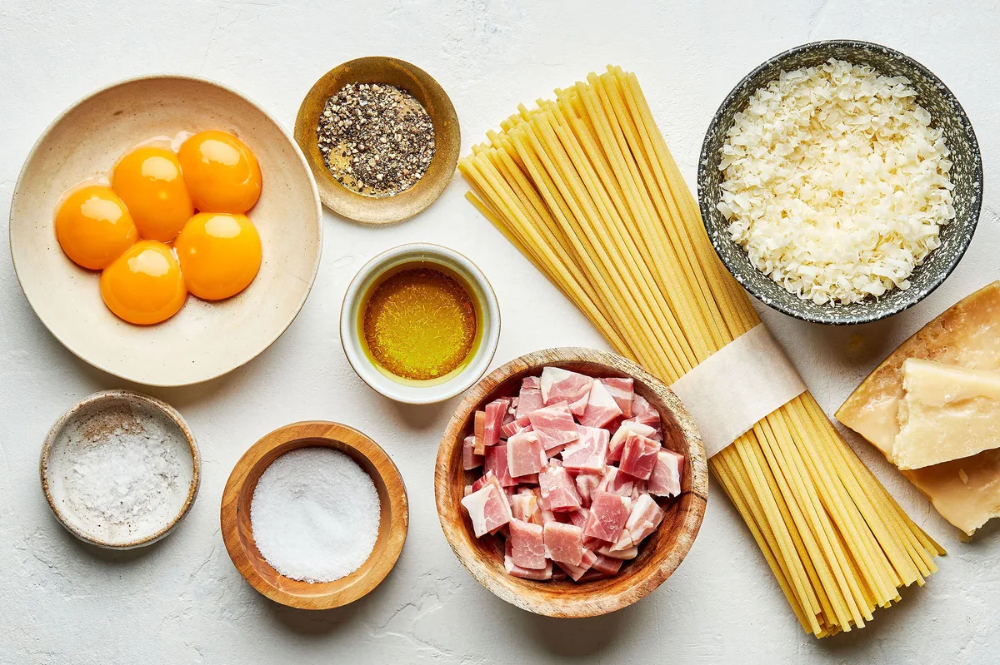
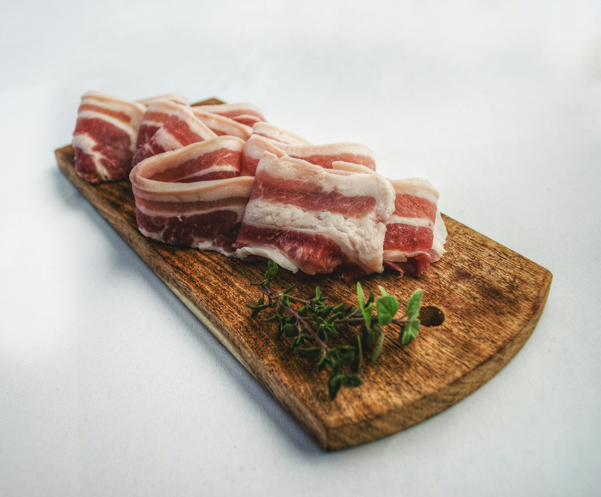
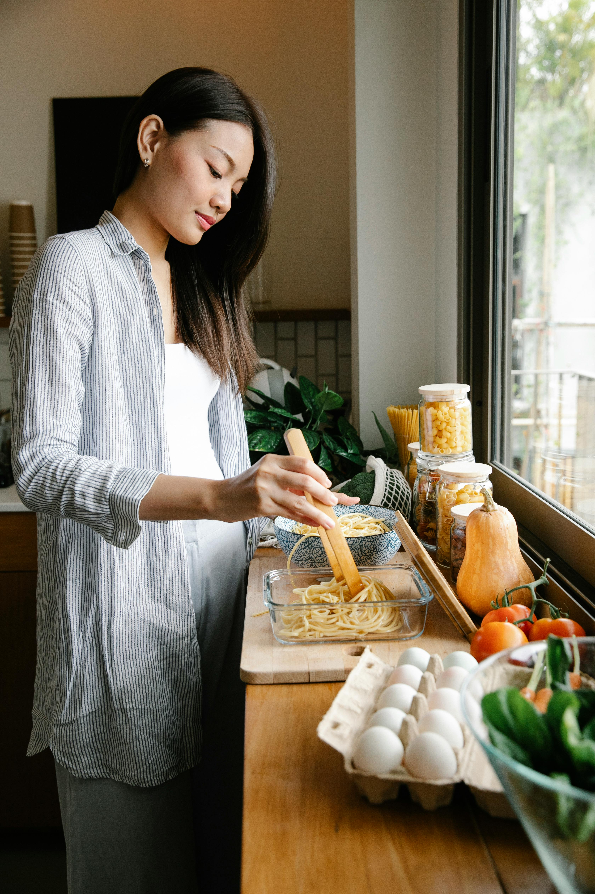
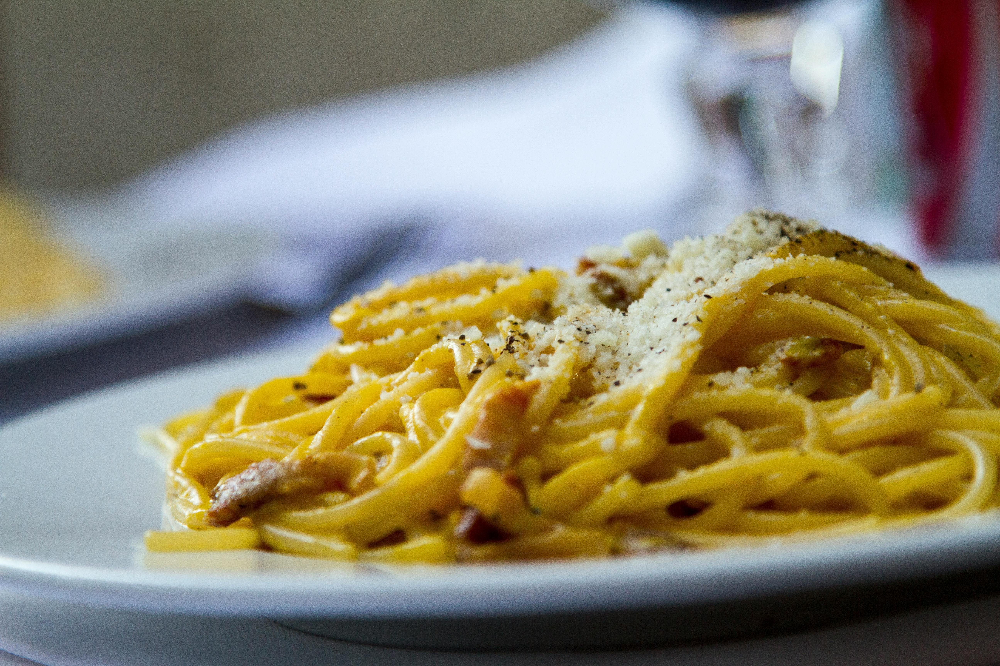

Ingredients
- 12 oz. Tonnarelli, spaghetti, mezze maniche or rigatoni
- 4 oz. Guanciale or rindless bacon
- ¼ cup grated Pecorino Romano (or Parmigiano Reggiano)
- 4 fresh large egg yolks
- Salt
- Black pepper

Step 1: Prepare the Guanciale
Cut the guanciale into ¼″ layers, then into long, 2″ strips.

Step 2: Make the Egg Mixture
Combine the egg yolks with the grated cheese and a pinch of black pepper.

Step 3: Cook the Guanciale and Pasta
Brown the strips of guanciale for 2 minutes in a pan, until crisp, then turn off the heat and leave to cool. Bring a large pot of water to a boil. Add salt. Cook the pasta, setting aside a ladleful of the pasta cooking water, until al dente. Drain.

Step 4: Combine and Serve
Pour the reserved hot water into the frying pan with the cooled guanciale, then transfer the pasta to the same pan and mix together. Add the yolk and cheese mixture, stirring rapidly. In the warm pan with the hot pasta, the eggs will cook gently and become creamy – don't stir over heat otherwise the carbonara will become lumpy. It's important to stir quickly to prevent the yolks from congealing and taking on the texture of scrambled eggs.
Image Citations & Resources
- Ingredients by Modernproper.
- Guanciale photo: Nicolas Postiglioni, Pexels. Accessed Oct 18, 2025
- Mixing egg into pasta: Sarah Chai, Pexels. Accessed Oct 18, 2025
- Cooking pasta image: PickPik. Accessed Oct 18, 2025
- Carbonara: Maurijn Pach, Pexels. Accessed Oct 18, 2025